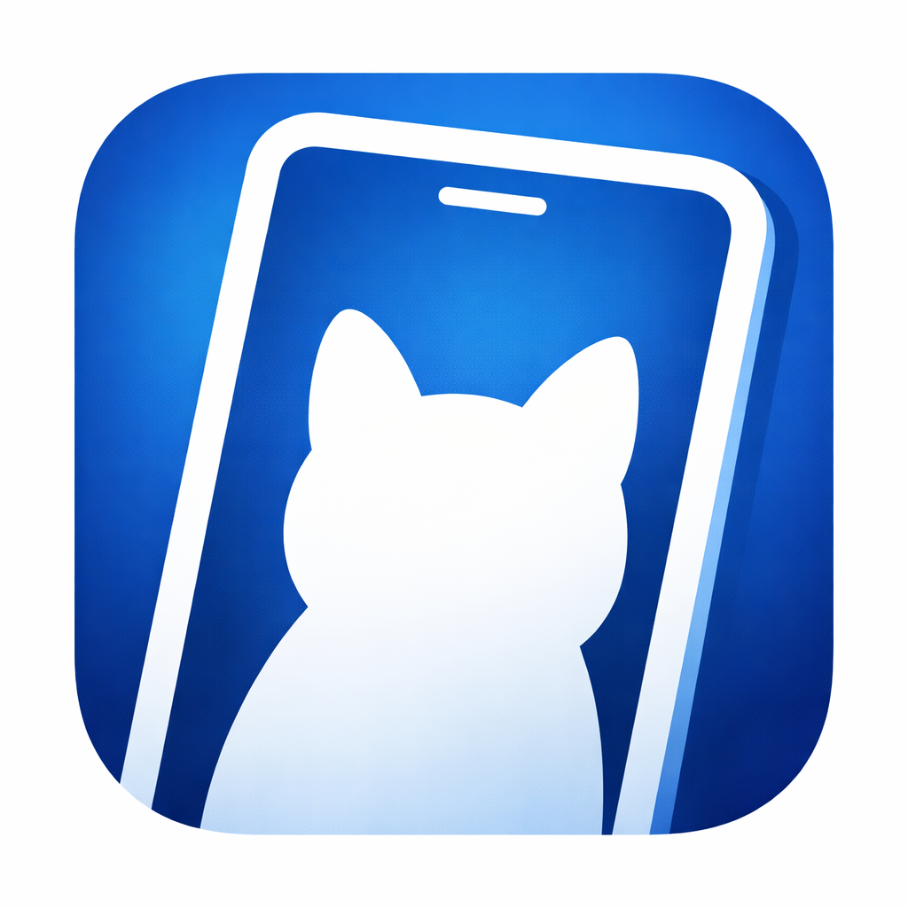
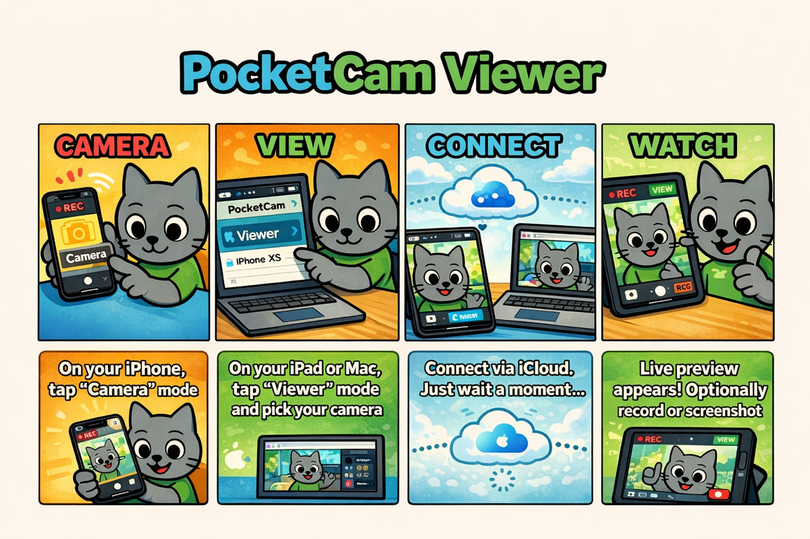

Turn one iPhone/iPad into a Camera, and watch it from
another device as a Viewer.
Prepare
two or more devices signed in with the same Apple ID.
Note: a small delay may occur — this is expected by
design.
Now on the App Store:
PocketCam Viewer
PocketCam Viewer is approved and available on the App Store. It works on iOS / iPadOS and macOS. No subscription.

Confirm both devices are signed in with the same Apple ID. If your workflow uses local discovery, also make sure they are on the same Wi‑Fi network and keep the Camera device awake.
This is usually network instability. Move closer to your router, reduce other network load, and avoid switching networks during a session.
Try rotating the Camera device and restarting the stream.
On the Camera device, allow microphone access: Settings → Privacy & Security → Microphone.
Send bug reports or feature requests to kjdevapphelp@gmail.com. Please include: app version, iOS/iPadOS version, device models, and steps to reproduce.